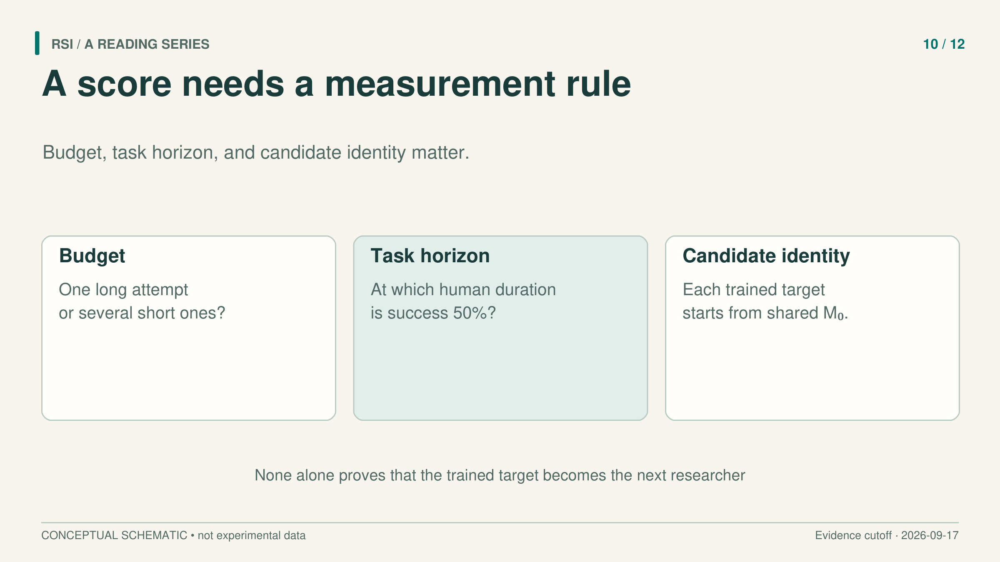
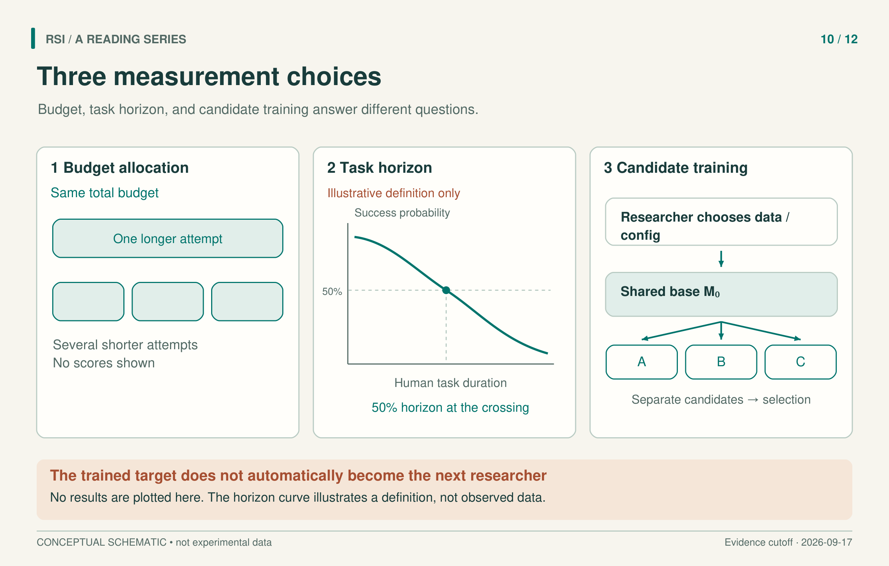

“An agent worked on research for 32 hours” sounds like one continuous investigation. A benchmark's 32-hour budget might instead fund several independent attempts, followed by selection of the best result. Those are both useful experiments, but they answer different questions about persistence, search, and resource use.
Research benchmarks become easier to interpret when we identify the object behind each number. Is it a submitted artifact, the best result found within a budget, a fitted success probability, or a trained candidate selected from a search? Three studies illustrate why that distinction matters.

A score needs an account of how attempts became a reported result.
A research score is relative to its references
RE-Bench provides seven research-engineering environments with starting solutions, scoring functions, and resource constraints. Its human reference includes 71 eight-hour attempts by 61 different experts. Humans can use the internet and language-model tools; this is not a comparison against unaided humans.
The benchmark places the starting solution at zero and an author-provided reference solution at one through linear normalization. Scores below the starting solution are clipped to zero. A value on this scale describes progress relative to those two references. It is neither a task-completion probability nor the fraction of human intelligence an agent possesses.
Selection also varies by task. Most environments record the highest score achieved during an attempt. The Scaling Law Experiment uses the final submission instead. An agent that briefly found a good result and then lost it can therefore be treated differently depending on the task's rule.
The studied agents primarily use 2024 versions of Claude 3.5 Sonnet and o1-preview with specified execution frameworks. Humans and agents receive the same wall-clock limit and environment GPU resources within a task, with API-failure pauses excluded. These comparisons concern those systems and conditions, not every later model.
Total time does not specify the attempt structure
RE-Bench also studies allocating a fixed total budget across attempts. Its best-score-at-budget analysis estimates the value of multiple attempts through resampling with replacement. Agents use the best attempt-length allocation observed in the study. The Scaling Law Experiment uses random selection where score-based selection is unavailable.
The reported ranking changes with budget. At two hours total, the best agent's average normalized score is about four times the expert reference. At eight hours, humans lead slightly. At 32 hours, humans score about twice as highly. These are ratios of mean normalized scores across the seven environments, not universal productivity ratios. Source
The long budget can include several independent attempts with resets. It does not show one agent maintaining a coherent project for 32 uninterrupted hours. The dollar comparison has another boundary: it includes API tokens and human compensation but excludes the environment's H100 cost.
For an illustrative experiment, giving one system a long attempt and another several restarts may be a legitimate strategy comparison. To claim that a better result came from longer sustained reasoning, however, the restart and selection policy would also need to be controlled. This is a suggested distinction, not an additional RE-Bench result.
A task's human duration is a different clock
Kwa and colleagues measure a task-time horizon using human completion time to describe task length. They fit agent success probability against the logarithm of that time. The 50% horizon is where the fitted curve crosses a success probability of one half.
For most tasks, the human duration is the geometric mean of successful human baselines. RE-Bench tasks are treated differently: they receive an eight-hour duration, and human-score thresholds determine success. The horizontal axis is therefore a task calibration, not simply an agent runtime log.
Suppose, in a clearly hypothetical example, a fitted horizon is two hours. The curve crosses 50% at tasks calibrated to take humans two hours. This does not say the agent ran for two hours, that every such task has exactly a 50% success chance, or that arbitrary real work is reliable at that duration. Task distribution, human context, success rules, and the agent's execution framework all affect the interpretation.
The paper also fits historical trends across model release dates in its 2019–2025 evaluation window. Such a trend does not identify its cause. Human research, training methods, data, and compute can all change between models. A release-date curve is not a record of one researcher repeatedly rewriting itself, and a historical fit does not establish a future causal law.

The curve illustrates a definition, not measured data. Training a target does not automatically make it the next researcher.
The researcher and the trained model are separate roles
RSIBench-Data moves closer to AI-assisted model improvement. A researcher agent revises data strategies and permitted training configurations inside a fixed post-training system. It cannot edit the optimizer, service, sandbox, or official scoring.
In the main matrix, four researcher systems work across six benchmarks. The target is fixed at Qwen3.5-35B-A3B-Base, and a separate fixed Opus 4.8 model supplies rollouts. Each low-rank adapter candidate starts from the same base model. A compact description is:
candidate t = Train(original base; data t, permitted configuration t)
The researcher can use feedback from earlier attempts to improve its next data recipe. The target weights do not form one continuously fine-tuned chain. The main nominal budget is 16 hours and $500 in Tinker credit, and researcher configurations also bundle model, execution framework, and reasoning settings. Comparing them does not isolate a single causal ingredient.
Selection and official evaluation run separately, but use the same task subsets. A fresh evaluation environment checks a new execution of the protocol. It does not turn previously used tasks into held-out generalization evidence.
The last candidate is not the selected candidate
A search can find a strong candidate, keep it, and then explore weaker alternatives. RSIBench-Data reports that, among 23 settings that continued after reaching their peak selection score, 18 ended with a last candidate below the peak and five returned to the peak. This is a property of the search trajectory. It is not the regression rate of the finally selected checkpoint.
Consider a teaching trajectory without numerical scores: a researcher finds a usable recipe, saves it, and then tries a riskier one that fails. The final attempt is worse, while the saved submission is unchanged. To judge whether exploration was useful, retain the attempted recipes and their costs; to judge selection, inspect the candidate actually chosen under the stated rule. A single line labeled “model performance” can conceal this difference.
Each setting contributes one prespecified representative run, rather than repeated independent trials that estimate a failure probability. Retaining a peak can protect the selected result from later exploration, but it does not establish that the procedure for generating candidates has improved.
Finally, the trained target does not automatically take over as the next researcher in the main experiment. Evidence that an agent can improve another model is valuable on its own. Evidence that the successor becomes a better researcher requires a different handoff and measurement.
Keep the measurement unit consistent in the caption. When reading a research benchmark, reconstruct the route from budget to attempts, attempts to candidates, and candidates to the reported score. Then identify what, if anything, changes in the researcher. That reconstruction tells us which capability the result actually tests.
Sources
- Wijk et al., RE-Bench, v2, 2025.
- Kwa et al., Measuring AI Ability to Complete Long Software Tasks, v4, 2026; discussed evaluation window: 2019–2025.
- Meng et al., RSIBench-Data, v1, 2026.
This article adapts a book with a literature cutoff of September 17, 2026. Experimental results are reported by the cited papers; this series did not rerun the experiments.